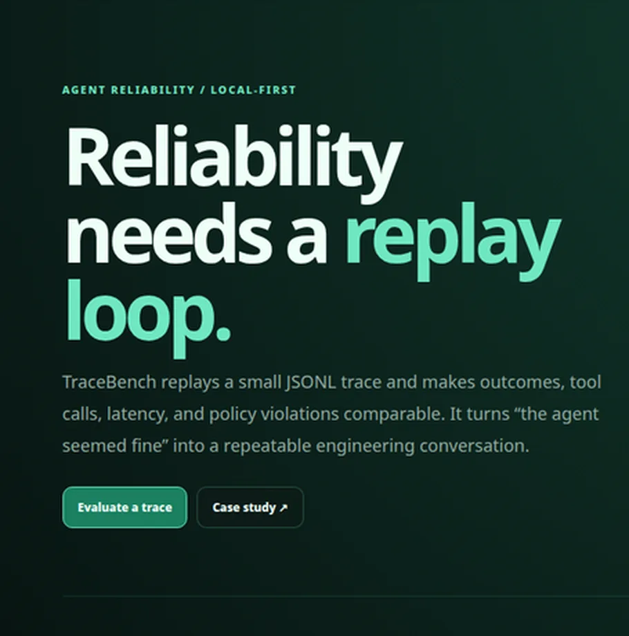
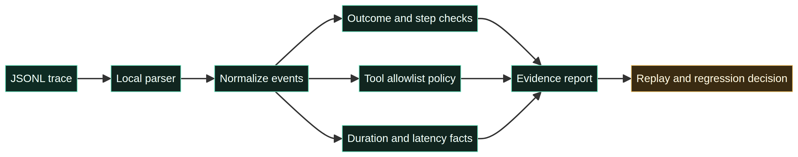

المهمة اليومية
إعادة تشغيل الحالة بعد تغيير prompt أو tool أو model أو policy وملاحظة ما تحرك.
TraceBench مختبر محلي لتقييم traces للوكلاء الأذكياء. يجعل النتيجة وعدد الخطوات والزمن وسلوك الأدوات قابلًا للمقارنة قبل تحسين prompt أو إطلاق مسار جديد.

قد تبدو الإجابة النهائية صحيحة بينما سلك الوكيل طريقًا غير آمن أو مكلف. المهمة المستمرة هي الاحتفاظ بحالات regression وسياسات الأدوات وأدلة trace قابلة لإعادة التشغيل. تستهدف الأداة مهندسي AI وفرق المنصات والمطورين.
إعادة تشغيل الحالة بعد تغيير prompt أو tool أو model أو policy وملاحظة ما تحرك.
استدعاءات الأدوات أدلة أساسية؛ الإجابة وحدها ليست اختبار موثوقية.
| القرار | الاختيار | السبب |
|---|---|---|
| الإدخال | JSONL event trace | محمول وقابل للفحص والتجهيز كـfixture. |
| الفحص | outcome وsteps وduration وallowlist | قواعد صغيرة ونتائج واضحة. |
| المخرج | تقرير أدلة للتقييم | يمهّد لمقارنة regression وCI. |

أنتجت العينة الفاشلة ثلاثة أحداث واستدعاءين للأدوات خلال 960ms، وأظهرت إشارة blocking واحدة لـ`shell_exec` خارج allowlist وتحذير latency، ثم أعادت `Review required`. هذه نتيجة fixture وليست metric إنتاجية.
الحد: TraceBench ليس tracing backend ولا model judge ولا ضمانًا للموثوقية.
إضافة golden datasets وredaction وتخزين traces وmodel adapters ومقارنة baseline وCI gates بحدود يملكها الفريق.